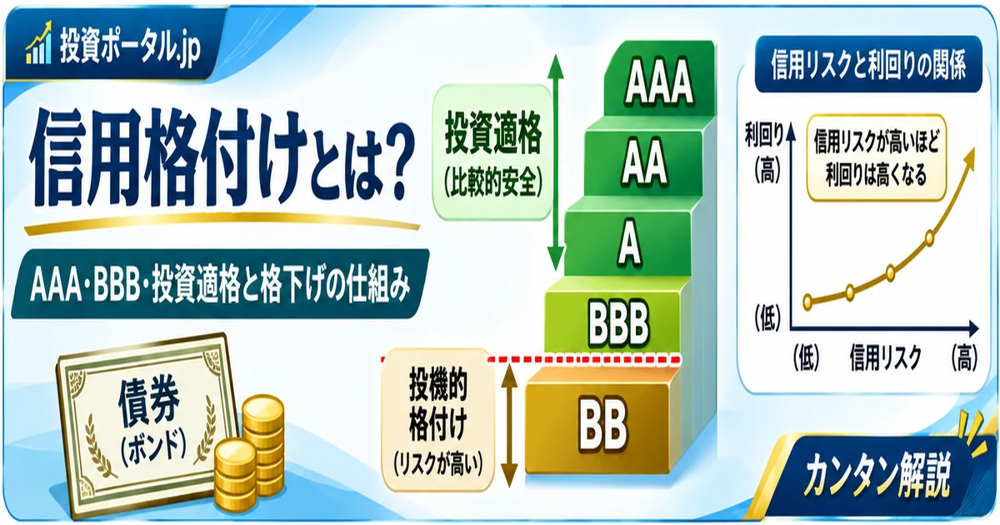

信用格付けとは？AAA・BBBの違いと投資適格・格下げが債券価格に与える影響を初心者向けに解説
AAA・BBB・BBの違いは何でしょうか。投資適格の境界から、格下げが信用スプレッドや債券価格に与える影響まで順番に解説します。

目次
- 信用格付けとは？
- 信用格付けの一覧表
- AAA・AA・A・BBBの違い
- 投資適格と投機的格付けの違い
- BBBとBBの違い
- 格付け会社とは？
- S&P・Moody’s・Fitchの格付け記号の違い
- 発行体格付けと個別債券格付けの違い
- 信用格付けはどのように決まる？
- 格付けと債務不履行（デフォルト）の関係
- 格付けと債券利回りの関係
- 信用スプレッドとは？
- 格下げされると債券価格はどうなる？
- 格下げと債券価格の数値例
- 格上げされると債券価格は上昇する？
- 格付けの見通し（アウトルック）とウォッチとは？
- 国債と社債の格付けの違い
- 債券ETFと信用格付けの関係
- 投資適格債券ETFとハイイールド債券ETF
- 信用格付けの限界と注意点
- 決算書や公式資料のどこを確認する？
- 初心者向けチェックリスト
- よくある質問（FAQ）
- まとめ
信用格付けとは？
信用格付けとは、国・企業などの発行体や債券等について、格付け会社が信用力・債務履行能力を評価した意見です。債務不履行（デフォルト）などの信用リスクを理解する参考になります。
最初に結論：格付けは元本保証ではなく、将来のデフォルトや価格変動、投資収益を確約しません。格付け会社・評価対象・格付けの種類により意味も異なります。
信用格付けの一覧表
| 長期格付け（S&P・Fitch型） | 一般的な区分 | 初心者向けの説明 |
|---|---|---|
| AAA | 投資適格 | 最上位の信用評価 |
| AA | 投資適格 | 非常に高い信用評価 |
| A | 投資適格 | 高い信用評価 |
| BBB | 投資適格 | 投資適格の下限を含む区分 |
| BB | 投機的格付け | 投資適格を下回る区分 |
| B | 投機的格付け | 信用リスクが比較的高い区分 |
| CCC以下 | 投機的格付け等 | 債務履行に関する懸念が大きい区分 |
BBB－以上：投資適格 ／ BB＋以下：投機的格付け
AA～CCCなどには「＋」「－」の細分化があります。デフォルト等を示すD・RDなどの特殊区分もあります。記号や定義は会社・格付け尺度ごとに公式説明を確認してください。
AAA・AA・A・BBBの違い
AAAは最上位、AAは非常に高い、Aは高い、BBBは一定の債務履行能力が評価される一方、上位より環境悪化の影響を受けやすい区分です。
相対的な信用力を表す意見であり、将来の不履行確率を完全に予測するものではありません。「AAAなら絶対安全」「BBBなら危険」とは言えません。
投資適格と投機的格付けの違い
投資適格は格付け尺度上、一定以上の信用力があると評価された区分。投機的格付けは、より高い信用リスクや不確実性があると評価された区分です。
「投資適格」は投資家個人にとっての適切性や損失のなさを保証しません。投機的格付けも投資目的や許容リスクによって評価が異なり、一律に不適切とは限りません。
BBBとBBの違い
BBB－は一般的な投資適格の下限、BB＋は投機的格付けの上限です。BBB－からBB＋に下がると、投資適格から投機的格付けへ移ることがあります。
このように投資適格から投機的格付けへ転落した債券はフォーリン・エンジェル（Fallen Angel）と呼ばれます。機関投資家の保有制限や指数採用条件に影響する場合もありますが、市場が悪化を事前に織り込んでいれば、発表後に必ず下落するとは限りません。
格付け会社とは？
代表的な会社にはS&P Global Ratings、Moody’s Ratings、Fitch Ratings、格付投資情報センター（R&I）、日本格付研究所（JCR）があります。対象、方法、記号体系に違いがあり、同じ発行体でも評価が異なることがあります。
格付け会社は元本・利息の支払いを保証する機関ではありません。
S&P・Moody’s・Fitchの格付け記号の違い
| S&P・Fitch型 | Moody’s型 | 一般的な区分 |
|---|---|---|
| AAA | Aaa | 投資適格 |
| AA | Aa | 投資適格 |
| A | A | 投資適格 |
| BBB | Baa | 投資適格 |
| BB | Ba | 投機的格付け |
| B | B | 投機的格付け |
| CCC | Caa | 投機的格付け |
細分化の例はBBB＋・BBB・BBB－とBaa1・Baa2・Baa3。投資適格の下限はそれぞれBBB－、Baa3です。これは主要な長期格付けの概略対応であり、すべての尺度・定義・評価方法が一致するわけではありません。
発行体格付けと個別債券格付けの違い
発行体格付け
国や企業など発行体の信用力や債務履行能力を、対象となる債務の範囲などに応じて評価します。
個別債券格付け
特定の債券・債務を評価します。担保、保証、優先順位、劣後性、契約条件、想定損失・回収率などによって同一企業の債券でも格付けが違う場合があります。
発行体の格付けを、その企業が発行する全債券の格付けと同一視しないことが大切です。
信用格付けはどのように決まる？
収益力、キャッシュフロー、有利子負債、財務健全性、事業環境、競争力、資金調達能力、経営方針、景気変動への耐性、国・地域の制度・経済環境などを総合的に評価します。具体的な方法は格付け会社や評価対象で異なります。
財務分析の基礎は自己資本比率、フリーキャッシュフロー、EBITDAも参考になります。
格付けと債務不履行（デフォルト）の関係
デフォルトとは契約に従った元利金の支払いなどが履行されない状態を指します。高格付けでも発生する可能性はゼロではありません。実際の損失は担保、弁済順位、回収率、債券条件で変わります。格付けだけで将来の不履行を完全に予測できません。
格付けと債券利回りの関係
信用リスクが高いと評価されるほど、投資家が高い利回りを要求する傾向があります。ただし利回りは市場金利、残存期間、流動性、通貨、需給、税制、契約条件でも変化します。異なる条件の債券で「低格付け＝必ず高利回り」とは限りません。
信用スプレッドとは？
信用スプレッドは信用リスクなどが異なる債券の利回り差を分析する指標です。詳しくは信用スプレッドとは？を参照してください。
架空例：社債3.5％ − 比較対象の国債2.0％ ＝ 1.5％ポイント ＝ 150bp
1bpは0.01％ポイント。実際の比較では通貨・残存期間・参照金利・算出方法を揃える必要があります。差のすべてが純粋なデフォルトリスクの対価ではなく、流動性等も反映されます。
格下げされると債券価格はどうなる？
信用力悪化で投資家の要求利回りが上がれば、既発の固定利付債券の価格には下落圧力がかかります。
- 信用力の悪化収益や資金繰りへの懸念が高まる
- 格下げ・信用リスクへの懸念信用評価や市場の認識が変化
- 信用スプレッド拡大比較対象に対する上乗せ利回りが拡大
- 要求利回りの上昇投資家がより高い利回りを求める
- 債券価格への下落圧力既発債の割引現在価値が低下
これは概念的な経路です。市場が格下げ前に織り込んでいる場合や、国債利回りが同時に低下する場合など、発表後の価格が必ず下がるわけではありません。国債価格・利回り・長期金利の関係も参考になります。
格下げと債券価格の数値例
架空の固定利付社債を仮定します。額面100万円、年2％の利払い（毎年2万円）、残存5年、年1回利払い、満期額面償還。要求利回りが2％から3％に上がる場合です。
価格 ＝ 20,000×Σ（1÷1.03t、t＝1～5）＋1,000,000÷1.035
≒ 954,203円
利回り2％のときは100万円、3％では約954,203円。差は約45,797円（約4.58％の下落）です。これは信用スプレッド拡大などによる利回り変化を仮定した計算例であり、格下げ時の実測値ではありません。市場金利・残存期間・信用スプレッドなどで変わります。債券のデュレーションも参考にしてください。
格上げされると債券価格は上昇する？
信用リスクへの懸念が後退してスプレッドが縮小すれば、固定利付債券の価格に上昇圧力がかかる場合があります。ただし事前の織り込み、市場金利の上昇、流動性、需給によっては上がらないこともあります。
格付けの見通し（アウトルック）とウォッチとは？
| 項目 | 意味 |
|---|---|
| 格付け（Rating） | 現在の信用力についての格付け会社の意見 |
| 見通し（Outlook） | 将来の格付け方向性に関する評価。安定的・ポジティブ・ネガティブなど |
| ウォッチ（CreditWatch / Rating Watch） | 特定の事象を背景に格付け変更の可能性を重点的に検討 |
名称、対象期間、運用方法は会社ごとに異なります。ネガティブ・アウトルックでも必ず格下げされるわけではありません。
国債と社債の格付けの違い
国債
国の財政状況、成長力、債務負担、政治・制度環境、通貨・金融制度などが評価対象になります。自国通貨建てと外貨建てでは評価が異なる場合があります。
社債
企業の収益力、キャッシュフロー、負債、事業環境、資金調達能力などを重視します。国債も元本保証とは限りません。国債入札、金利の種類、イールドカーブも関連します。
債券ETFと信用格付けの関係
債券ETFは複数の債券を保有するため、組入債券の格付け構成を見る必要があります。投資適格・投機的格付け比率、国債・社債比率、国・地域、業種、発行体集中度、信用スプレッドへの感応度、デュレーションを確認しましょう。
運用会社の月次資料・組入銘柄一覧に構成が示される場合があります。平均格付けが高くてもETFの元本は保証されません。また「ETF自体への信用格付け」と「組入債券の平均格付け」は別です。
投資適格債券ETFとハイイールド債券ETF
| 項目 | 投資適格債券ETF | ハイイールド債券ETF |
|---|---|---|
| 主な組入対象 | 投資適格債券 | 投機的格付け債券 |
| 信用リスク | 相対的に低い傾向 | 相対的に高い傾向 |
| 利回り | 市場環境等による | 信用リスク等を反映する傾向 |
| 景気悪化の影響 | 商品による | スプレッド拡大の影響を受けやすい場合 |
| 金利リスク | あり | あり |
投資適格債券ETFが必ず安全というわけでも、ハイイールド債券ETFが必ず高収益というわけでもありません。景気後退、リスクオフも参考になります。
信用格付けの限界と注意点
- 将来のデフォルトや損失の保証ではない
- 格付け変更が市場価格の変化より遅れることがある
- 会社ごとに評価が異なる場合がある
- 信用リスクと価格変動リスクは別の概念
- 同じ格付けでも期間・弁済順位・担保でリスクが異なる
- 発行体が格付け費用を負担する場合など、報酬体系と利益相反管理は制度上の論点
格付けは有用な情報の一つですが、投資判断の唯一の基準にはなりません。
決算書や公式資料のどこを確認する？
格付け会社の公式発表、発行体IR、社債の発行登録書・目論見書、有価証券報告書、決算短信、ETF月次運用報告書・組入銘柄・格付け構成資料を確認します。
発表日、対象発行体・債務、長期・短期、通貨、格付け見通し、発行体格付けか個別債券格付けかを取り違えないようにしましょう。
初心者向けチェックリスト
- □ 格付け会社はどこか
- □ 発行体か個別債券か
- □ 長期か短期か
- □ 投資適格か投機的格付けか
- □ 格付け見通しはどうか
- □ 変更履歴はあるか
- □ 信用スプレッドの推移
- □ 残存期間
- □ 弁済順位と担保
- □ 発行体の財務健全性
- □ ETFの組入格付け構成
- □ 為替リスクと流動性リスク
外貨建て債券については為替ヘッジあり・なしの違いも確認しましょう。
よくある質問（FAQ）
信用格付けとは何ですか？
発行体や債券の信用力を格付け会社が評価した意見です。
AAAとBBBでは何が違いますか？
どちらも一般に投資適格ですが、AAAは最上位、BBBは下限を含む区分です。
BBBは投資適格ですか？
S&P・Fitch型の長期格付けではBBB－以上が一般に投資適格です。
BBB－とBB＋の違いは何ですか？
前者は投資適格の下限、後者は投機的格付けの上限です。
投資適格とは安全な債券という意味ですか？
いいえ。元本保証や価格変動がないことを意味しません。
投機的格付けとは何ですか？
投資適格を下回り、相対的に信用リスクが高いと評価される区分です。
S&PとMoody’sでは記号が違いますか？
はい。S&PのBBB－に概ね対応するMoody’sの記号はBaa3です。
発行体格付けと社債格付けは同じですか？
必ずしも同じではありません。担保や弁済順位などで異なる場合があります。
格付けが高ければ元本は保証されますか？
保証されません。
格下げされると債券価格は必ず下がりますか？
必ずではありません。市場の事前織り込みや金利変化にも左右されます。
格上げされると債券価格は上がりますか？
上昇圧力がかかる場合がありますが、必ず上がるわけではありません。
信用スプレッドとは何ですか？
比較対象の債券に対する利回り差を分析する指標です。
ネガティブ・アウトルックとは何ですか？
将来の格下げ方向への可能性を示す見通しで、格下げの確約ではありません。
フォーリン・エンジェルとは何ですか？
投資適格から投機的格付けへ下がった債券などを指します。
国債にも信用格付けはありますか？
あります。国の財政や制度環境などが評価されます。
債券ETFの格付けはどこで確認できますか？
運用会社の公式月次資料や組入債券の格付け構成資料などを確認します。
まとめ
- 信用格付けは国・企業・債券などの信用力を評価する参考情報です。
- 一般的にBBB－以上が投資適格、BB＋以下が投機的格付けです。
- 格下げや信用力悪化はスプレッド・債券価格に影響し得ますが、値動きは決まりません。
- 利回り・期間・財務健全性・流動性・為替リスクなどを総合的に確認しましょう。
関連記事
参考資料・一次情報
格付けの説明は各社公式資料を参考に初心者向けに簡略化しています。公式定義の逐語訳ではありません。
免責事項
本記事は一般的な金融教育を目的とし、特定の金融商品・証券会社の推奨や投資助言ではありません。投資には価格変動、信用、金利、為替、流動性などのリスクがあります。最新の公式資料をご確認ください。